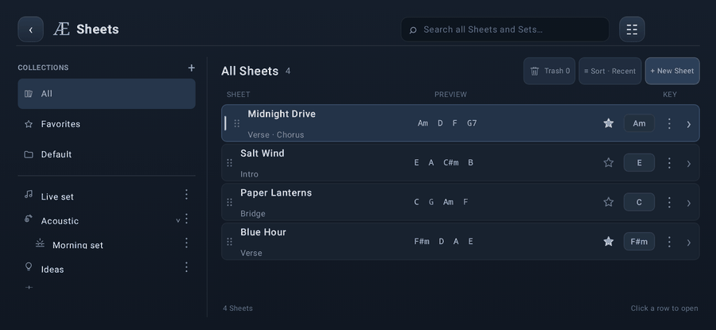
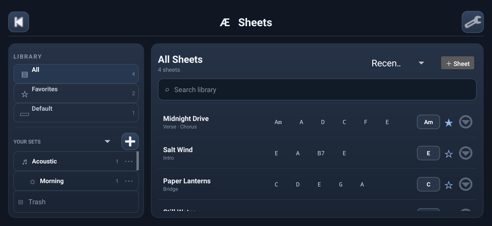
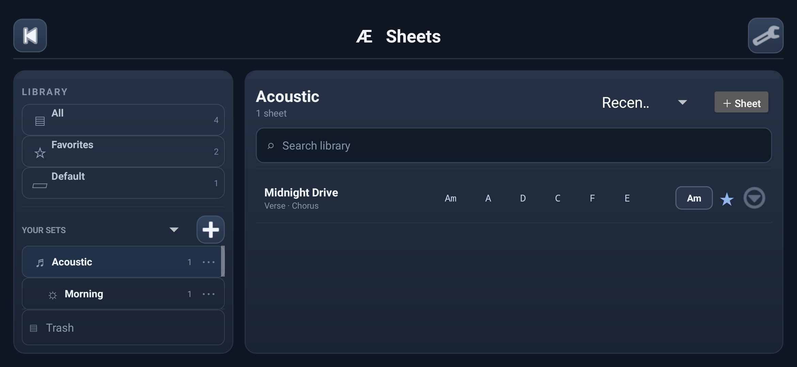
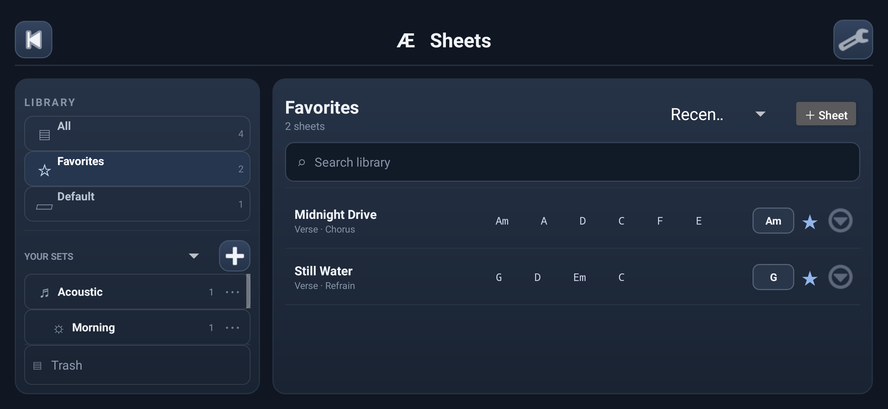
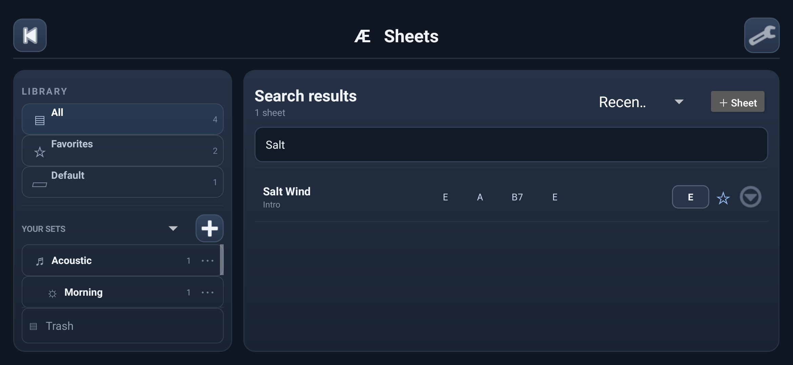
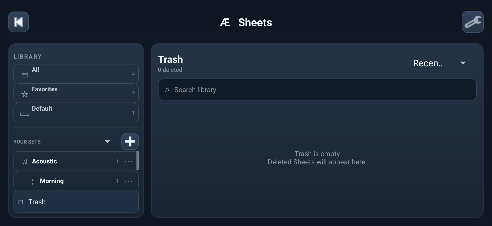

Sheets - refonte
5 etats rendus par le vrai ecran Android (Views/XML, Robolectric + Roborazzi,
hors emulateur). Cliquer une vignette pour l'image pleine (PNG 2340x1080).
Ecran SheetsActivity (package com.aetherkeys.sheets.library),
traduction de SheetsHome.jsx. Integre a l'app Compose, ouvert depuis l'en-tete Sheets.
Animation 5 etats

Ecrans 5

BibliothequeDeux volets : filtres systeme + arbre de Sets a gauche, liste des feuilles a droite.

Set ouvertOuvrir un Set filtre la liste sur ses feuilles ; la feuille porte sa cle et sa progression.

FavorisLe filtre Favoris ne garde que les feuilles marquees.

RechercheUne recherche reduit la liste a une seule feuille, avec son apercu d'accords.

CorbeilleVue a part : feuilles supprimees, restauration par ligne et vidage.